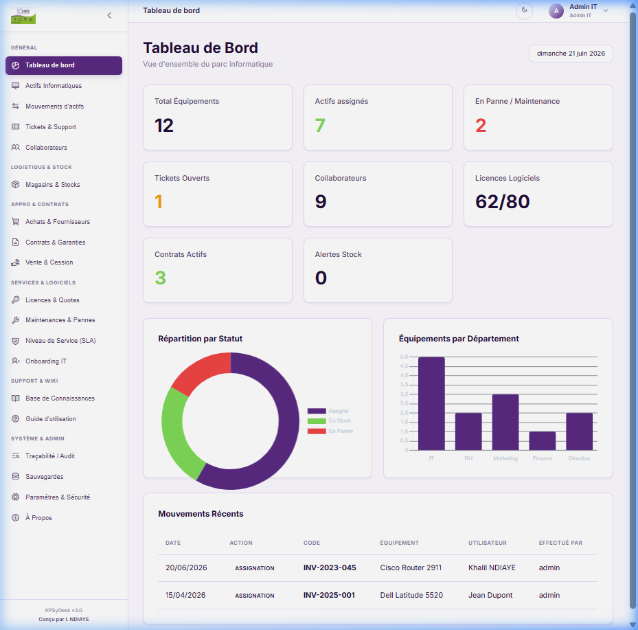
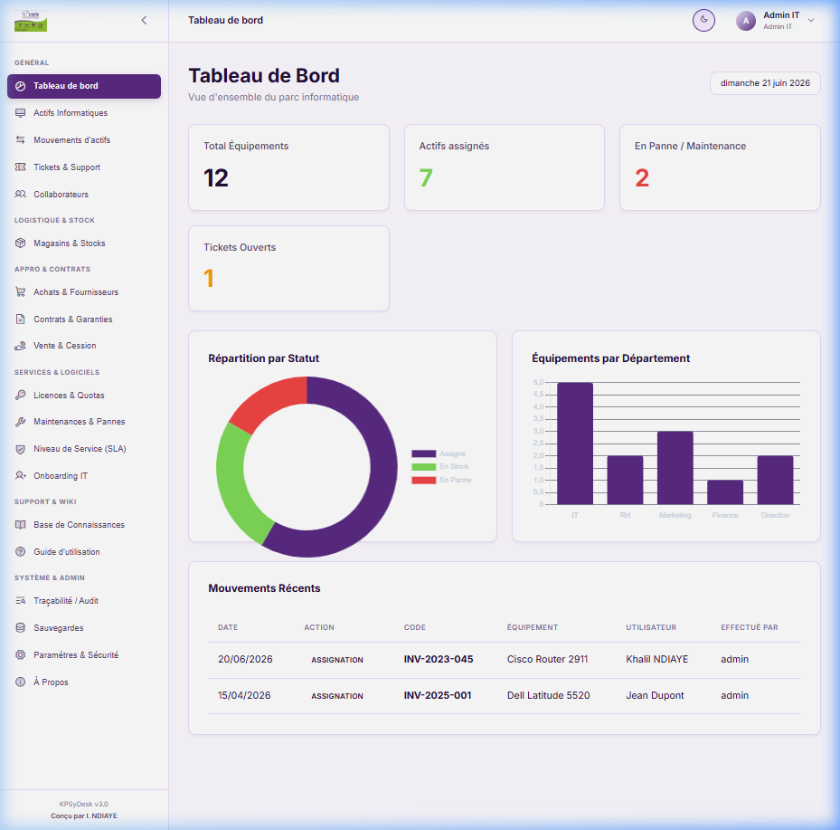
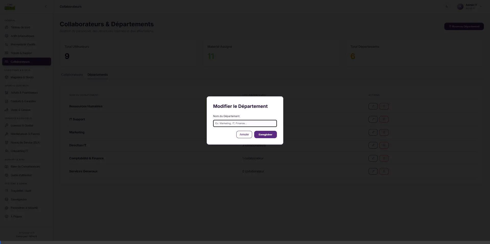
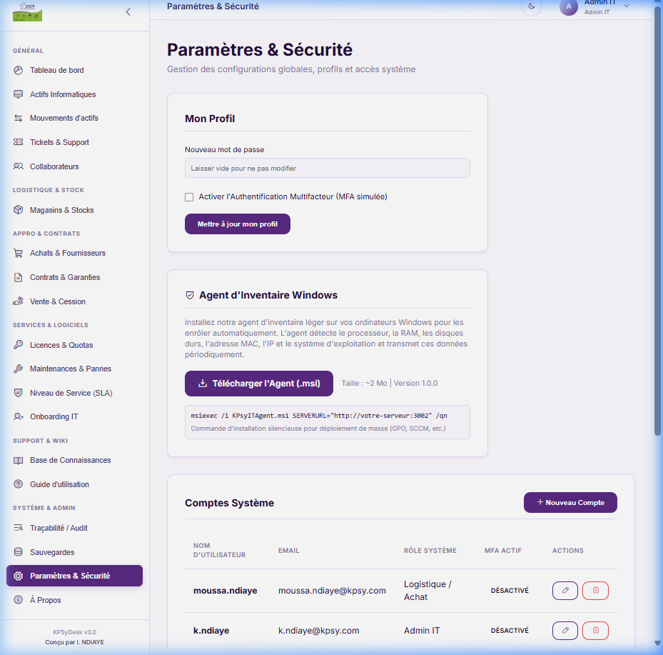
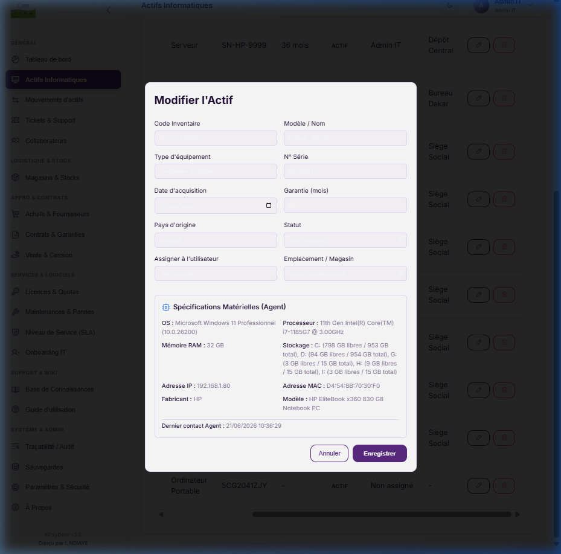

Guide d'Utilisation Officiel & Script de Formation
Ce manuel est une ressource de formation conçue pour accompagner tous les utilisateurs (Administrateurs IT, Techniciens de Support, Ressources Humaines, Finance et Utilisateurs Standards) dans l'apprentissage et la maîtrise de l'ensemble des modules applicatifs de la solution.
Table des Matières
- 1. Introduction & Concepts Clés
- 2. Authentification, Droits & MFA
- 3. Tableau de Bord & Indicateurs
- 4. Inventaire du Matériel
- 5. Mouvements d'Actifs
- 6. Support, Helpdesk & Tickets
- 7. Gestion RH & Onboarding IT
- 8. Magasins & Consommables
- 9. Achats, Commandes & Logistique
- 10. Contrats de Garantie
- 11. Ventes & Cessions d'Actifs
- 12. Logiciels & Licences
- 13. Maintenances Curatives/Préventives
- 14. Accords de Service (SLA)
- 15. Base de Connaissances (Wiki)
- 16. Historique & Audit
- 17. Sauvegardes & Restauration
- 18. Agent Windows & Enrôlement
- 19. Script de Formation (Tutoriel)
1. Introduction & Concepts Clés Tous Rôles
**KPSyDesk v3.0** est une solution intégrée de gestion des actifs informatiques (ITAM) et des services de support (ITSM). Son objectif principal est de centraliser et d'historiser le cycle de vie complet de chaque équipement au sein de l'entreprise, depuis son achat initial jusqu'à sa cession finale.
L'architecture de l'application privilégie la sécurité locale ("Local-first"). Contrairement aux solutions infonuagiques tierces, KPSyDesk fonctionne de manière autonome au sein de votre réseau interne (le plus souvent déployé via Docker avec un conteneur React pour l'interface utilisateur, un serveur NestJS pour l'API logique et PostgreSQL pour les données). Ce choix technologique garantit que vos configurations matérielles, listes de personnel et données financières restent confinées dans votre infrastructure physique, réduisant à néant les risques de piratage à distance.
2. Authentification, Droits & MFA Tous Rôles
Chaque collaborateur accède à KPSyDesk via ses identifiants uniques fournis par la direction informatique. Les droits d'accès au sein du logiciel sont régis par cinq rôles métiers distincts :
| Rôle applicatif | Périmètre de droits | Exemple d'utilisation métier |
|---|---|---|
| Admin IT | Contrôle total sur tous les modules, configurations système, base de données et gestion des licences. | Directeur des Systèmes d'Information, Administrateur Système. |
| Technicien | Gestion des tickets helpdesk, des fiches matérielles de l'inventaire et des cycles de maintenance. | Technicien support de proximité, Responsable Helpdesk. |
| Ressources Humaines (RH) | Accès exclusif à la gestion du personnel, fiches collaborateurs, et checklists d'onboarding/offboarding. | Chargé de recrutement, DRH. |
| Finance / Achat | Visualisation et modification des modules financiers (Fournisseurs, Achats, Contrats, Ventes). | Comptable, Acheteur IT. |
| Standard User | Création de tickets pour ses propres pannes, lecture de la Base de Connaissances. | Employé de bureau, utilisateur final d'un PC portable. |
Sécurité Renforcée (MFA) : Afin de protéger les comptes à haut privilège (Admins et Techniciens), KPSyDesk intègre l'authentification à double facteur (MFA). Lors de la première connexion, l'utilisateur scanne un QR code à l'aide d'une application d'authentification standard (Google Authenticator, Microsoft Authenticator) et saisit un code à 6 chiffres temporaire (TOTP) pour valider l'association.
3. Tableau de Bord & Indicateurs Tous Rôles
Le Tableau de Bord s'affiche immédiatement après la connexion. C'est l'écran de synthèse centralisé. Dans la version 3.0, il regroupe 8 indicateurs statistiques clés sous forme de cartes d'analyse et de graphiques dynamiques :
- Total Équipements : Nombre brut de tous les matériels répertoriés.
- Actifs Assignés : Matériel actuellement attribué à un collaborateur et en cours d'utilisation.
- Équipements en Stock : Matériels disponibles en magasin pour de futures affectations.
- Tickets Ouverts : Demandes de support en cours de traitement par les techniciens.
- Collaborateurs : Nombre d'utilisateurs référencés dans la base de données.
- Licences Actives : Nombre de clés logicielles valides et enregistrées.
- Contrats Actifs : Garanties ou contrats de maintenance en cours de validité.
- Alertes Stock Consommables : Nombre de consommables sous le seuil d'alerte critique.

Les graphiques circulaires représentent la répartition de l'inventaire par catégorie (PC fixes, PC portables, Téléphones...) et l'état d'urgence des tickets helpdesk en temps réel.

4. Inventaire du Matériel Techniciens Admins
Ce module gère le matériel de l'entreprise. Pour ajouter un nouvel équipement :
- Rendez-vous dans la section Actifs Informatiques puis cliquez sur + Ajouter un Actif.
- Remplissez la fiche d'informations : Nom, Catégorie (Serveur, Ordinateur portable, Imprimante...), Modèle, Numéro de série et Code d'inventaire.
- Sélectionnez le Statut : Actif, En Stock (disponible), En Panne (bloqué pour maintenance), ou Réformé (hors d'usage/vendu).
- Associez un collaborateur si le matériel lui est affecté individuellement.
- Cliquez sur Enregistrer.
Chaque équipement se voit attribuer une étiquette PDF avec un QR Code unique généré automatiquement par l'application. En scannant ce code avec un terminal mobile, le technicien accède directement à la fiche de maintenance de l'appareil dans la base KPSyDesk.
5. Mouvements d'Actifs Techniciens Admins
Pour éviter les pertes, KPSyDesk journalise chaque changement d'état physique d'un appareil. Lorsqu'un ordinateur portable est transféré du Département Finance au Département Marketing, ou lorsqu'il retourne au stock après le départ d'un employé, un mouvement est créé.
Le technicien effectue un Check-out (affectation) ou un Check-in (remise en stock) depuis la fiche de l'actif. Chaque mouvement enregistre automatiquement l'ancien détenteur, le nouveau détenteur, la date de la modification et le technicien qui a opéré le changement. Un onglet "Historique" sur la fiche de l'équipement permet de retracer sa vie de bout en bout.
6. Support & Pannes (Helpdesk & Tickets) Tous Rôles
La gestion des pannes repose sur l'ouverture de Tickets. Un employé standard peut ouvrir un ticket s'il rencontre un problème technique.
Cycle de vie d'un ticket de support :
1. Nouveau : Le ticket est créé par l'utilisateur final ou saisi par un technicien. Le sujet et la description sont renseignés.
2. Assigné / En Cours : Le responsable du helpdesk attribue le ticket à un technicien spécifique. Le statut passe à "En cours de résolution".
3. Résolu : Le technicien saisit des notes de résolution (ex: "Remplacement du câble réseau défectueux") et clôture le ticket. Une alerte informe le demandeur.
Les tickets sont triés par priorité (Basse, Normale, Haute, Critique). Les incidents critiques apparaissent en rouge clignotant sur la console du technicien pour une intervention prioritaire.
7. Gestion du Personnel (RH & Onboarding IT) RH Admins
Le module **Collaborateurs & Départements** permet de gérer l'affectation du personnel de l'entreprise.
Le Défi de l'Onboarding / Offboarding : L'arrivée d'un nouvel employé nécessite la coordination de l'équipe informatique et des RH. KPSyDesk intègre des Checklists de processus RH :
- À l'arrivée (Onboarding) : Les RH ou l'admin valident la liste des étapes obligatoires : *Attribuer un ordinateur*, *Créer l'adresse e-mail*, *Remettre le badge physique*, *Former sur les outils*.
- Au départ (Offboarding) : Lors de la rupture du contrat d'un employé, le système affiche les actifs liés. Les RH cochent la restitution de la machine, la fermeture du compte d'accès et la révocation du badge.


8. Gestion du Stockage (Magasins & Locaux) Techniciens Admins
Les matériels informatiques neufs ou en attente d'affectation sont placés dans des Magasins de stockage géographiques (ex: *Stock Central Bureau 102*, *Magasin Annexe A*).
Consommables et Seuils d'Alerte : Ce sous-module liste les petites fournitures (souris, claviers, cartouches d'encre HP Noir, câbles HDMI). Chaque consommable possède un champ "Seuil d'alerte". Si le stock restant descend en dessous de ce chiffre (ex: moins de 5 cartouches d'encre), l'indicateur *Alertes Stock* du tableau de bord s'incrémente et s'affiche en rouge, alertant le gestionnaire qu'il est temps de réapprovisionner le matériel.
9. Logistique, Finances & Achats Finance Admins
Le module **Finances** gère l'aspect budgétaire.
- Fournisseurs : Base de données des vendeurs (Nom, Téléphone, Adresse, Contact commercial).
- Bons de Commande : Enregistrement des achats d'équipements avec liaison au fournisseur et scan de la facture PDF. Un bon de commande permet d'importer directement en stock une série d'ordinateurs achetés en un seul clic, limitant les saisies manuelles fastidieuses.
10. Contrats & Garanties Finance Admins
Il est capital de suivre les garanties constructeurs pour éviter de payer des réparations qui auraient dû être prises en charge gratuitement.
Le module **Contrats** permet de lier un équipement à un contrat de garantie ou de maintenance tiers (ex: *Garantie HP Care Pack 3 ans*). L'application calcule la date de fin de contrat et affiche des notifications d'avertissement 60 et 30 jours avant le terme pour renégocier les conditions ou déclarer les derniers matériels en panne.
11. Ventes & Cessions de matériel Finance Admins
Lorsqu'un matériel informatique atteint sa fin de cycle de vie au sein de l'entreprise, il peut être réformé. KPSyDesk v3.0 intègre un processus de cession / vente au personnel ou de mise au rebut.
En sélectionnant un équipement réformé, le comptable peut enregistrer une "Vente", en spécifiant la date, le prix symbolique consenti, et le collaborateur acquéreur. Dès la validation de la vente, le matériel change automatiquement de statut pour passer en **Réformé/Cédé**, le libérant ainsi des inventaires actifs de l'entreprise tout en gardant une trace légale de sa sortie physique.
12. Abonnements & Logiciels (Licences) Techniciens Admins
La gestion des licences logicielles prévient le risque de sur-utilisation (amendes lors d'audits éditeurs) ou de sous-utilisation (gaspillage budgétaire).
Le module **Licences** permet de déclarer chaque logiciel acquis (ex: *Microsoft Office 365 Business*), sa clé d'activation, sa date d'expiration et son quota de postes maximum autorisés. À chaque fois qu'un technicien affecte le logiciel à la fiche d'un ordinateur, le nombre de licences consommées s'incrémente de 1. Si le quota de postes autorisés est dépassé, une alerte visuelle orange s'affiche. Une ligne rouge s'affiche également si la date d'expiration de la licence survient dans moins de 30 jours.
13. Maintenance Curative & Préventive Techniciens
Les interventions techniques sur le matériel informatique se divisent en deux catégories dans KPSyDesk :
- Maintenance Curative : Fait suite à une panne signalée sur un ticket. Elle détaille le coût des pièces remplacées (ex: *Disque SSD 500 Go* à 45 €) et le coût de la main-d'œuvre si un réparateur externe intervient.
- Maintenance Préventive : Planifiée à intervalles réguliers (ex: *Dépoussiérage des serveurs* tous les 6 mois). Le technicien programme des rappels récurrents pour exécuter ces tâches de maintenance périodiques.
14. Niveau de Service (SLA) Admins
Les **SLA (Service Level Agreements)** mesurent l'efficacité de l'équipe de support informatique. Dans les paramètres système, l'administrateur définit des règles temporelles strictes par niveau de priorité :
| Priorité du Ticket | Délai de Prise en Charge Max | Délai de Résolution Max |
|---|---|---|
| Critique | 15 minutes | 2 heures |
| Haute | 1 heure | 4 heures |
| Normale | 4 heures | 24 heures |
| Basse | 8 heures | 48 heures |
Si un ticket dépasse les délais de résolution imposés par sa priorité, KPSyDesk déclenche une **alerte d'escalade** visuelle et envoie une alerte automatique au responsable de l'équipe informatique.
15. Base de Connaissances (Wiki) Tous Rôles
La **Base de connaissances** est la bibliothèque de résolutions de pannes de l'entreprise.
Lorsqu'un technicien résout un problème complexe (ex: *Configuration de l'accès VPN sur macOS*), il rédige un article explicatif avec des étapes numérotées. Les utilisateurs standards ont un accès en lecture à cette base. Avant d'ouvrir un ticket pour une panne simple, ils peuvent rechercher des solutions directement dans ce Wiki (auto-assistance), désengorgeant le flux de demandes du helpdesk.
16. Traçabilité & Audit de Sécurité Admins
Pour se conformer aux normes de gouvernance informatique et de sécurité, chaque action effectuée sur KPSyDesk est enregistrée de manière inaltérable dans les **Journaux d'Audit (Audit Logs)**.
Chaque log contient la date exacte, l'adresse IP de l'utilisateur, l'identifiant de la personne, le type d'action (CRÉATION, MODIFICATION, SUPPRESSION) et les anciennes valeurs comparées aux nouvelles valeurs. L'administrateur peut filtrer ces logs par date ou par utilisateur pour mener des investigations en cas d'erreur humaine ou d'action malveillante suspectée.
17. Sauvegardes & Restauration Admins
Le module **Paramètres & Sauvegardes** propose un bouton d'exportation en 1 clic :
- Sauvegarde Totale : L'export génère un fichier JSON sécurisé contenant la totalité de la base de données (actifs, utilisateurs, départements, consommables, tickets d'historique, contrats, configurations, et journaux d'audit).
- Restauration : Sur une nouvelle machine vierge, l'administrateur réinstalle l'application, sélectionne le fichier JSON sauvegardé dans l'outil de restauration et clique sur "Restaurer". L'intégralité du système est reconstituée instantanément.
18. Agent Windows & Enrôlement Automatique Techniciens Admins
Pour éviter d'entrer manuellement les configurations techniques détaillées de chaque poste de travail, KPSyDesk v3.0 propose un **Agent d'Inventaire Windows** (`KPsyITAgent.msi`), équivalent à l'agent GLPI.

Fonctionnement technique de l'agent client :
- Installation Interactive : Durant l'exécution manuelle du fichier `.msi`, une fenêtre graphique invite l'administrateur ou le technicien à saisir l'adresse URL du serveur KPSyDesk (ex: `http://192.168.1.50:3002`).
- Stockage Registre : L'URL saisie est enregistrée de manière permanente dans la base de registre Windows au chemin `HKLM\Software\KPsyITAgent` (avec gestion de la redirection Wow6432Node pour compatibilité Windows 64-bits).
- Collecte des Caractéristiques : L'agent (script PowerShell natif compilé) interroge le matériel via WMI : Nom d'hôte, numéro de série du BIOS, constructeur, modèle, système d'exploitation, caractéristiques du processeur (CPU), taille de la mémoire RAM installée, partitions des disques durs (taille totale et espace libre actuel), adresse IP locale et adresse physique MAC.
- Tâche Planifiée (SYSTEM) : Une tâche planifiée nommée `KPsyITAgent` est enregistrée dans Windows pour s'exécuter silencieusement chaque jour, de manière invisible, sous le compte d'administration local `SYSTEM` de l'ordinateur.
- Envoi de Données & Fallback : Les informations sont transmises au point de terminaison HTTP du serveur (`POST /api/assets/enroll`). Si le numéro de série du BIOS renvoyé est invalide ou générique (ex: "To Be Filled By O.E.M."), l'agent utilise comme identifiant de repli ("fallback") l'adresse MAC physique réseau pour éviter les conflits d'enrôlement ou la création de machines doublons.

19. Script de Formation : "Premiers pas avec KPSyDesk v3.0"
Ce script scénarisé simule une session de formation animée par un formateur IT à destination de collaborateurs découvrant le logiciel. Il peut servir de trame pour créer des vidéos d'aide ou des webinaires.
Document de Référence Technique & Formation - KPSyDesk v3.0 | Édition Professionnelle 2026